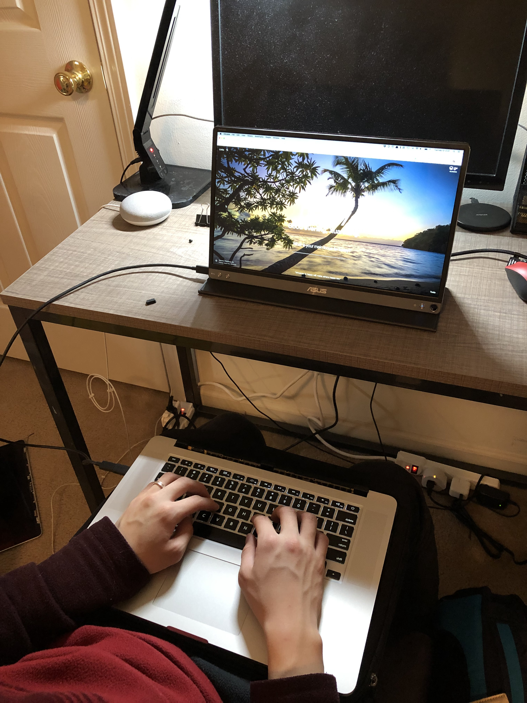
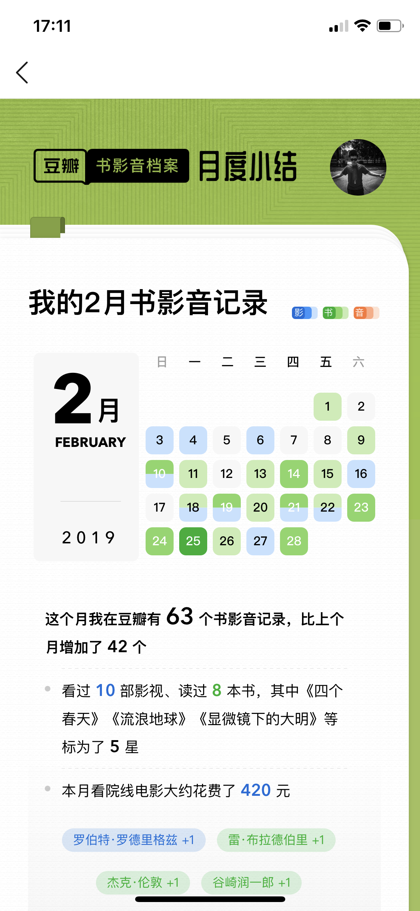

月结恢复更新啦！2019年2月。上一期是2018年11月。。12月和1月的两期被融到18年的年度总结里去了（上、下）。
首先插播一条广告——我们的公众号和 Podcast 上线啦！全平台搜索「半夜醒来」就能找到我们哦！（详情）
变身「键盘侠」
之前笔记本的屏幕不幸坏了，最终在 Bing 的主刀下，屏幕被完全拆卸下来，笔记本变成了一个自带键盘的 Mac Mini 😂：

一个外接屏幕在大部分时候都够用了，在 iPad 上也可以通过 Duet 这个app来作为第二个屏幕！但最开始使用的几天还遇到了若干次黑屏自动关机的问题，参考这个网页的解决方案卸载掉 ethernet via thunderbolt 的驱动之后就可以解决。
还有，蓝牙、wifi的接收天线是连着显示屏的，需要剪掉摄像头的线之后再把天线重新固定在键盘底座上。摄像头不是问题，强如刘欢老师也把自己的摄像头给糊起来了😂：
书影“音”月度总结
豆瓣出了书影音的月度小结，对嘛，年度总结能做，月度小结早就可以上线了嘛~

书
元宵节微信读书搞活动，送了好几本虚构类的书，不知为何，我突然就有点想要读这些小说的冲动，之前我都是喜欢非虚构类书籍胜过其它。或许是读虚构类的东西完全不需要抱着学到什么的心态也就没有压力？
因此我读了读麦克尤恩，他的处女作《最初的爱情，最后的仪式》让我很矛盾，原以为遇到了一个难得能被吸引读下去的的虚构类作者，结果其中几篇副作用太大，感觉明显不适。。。。听说他后期写中长篇之后有所改变？期待后续的阅读体验。
我也读了读大名鼎鼎的博尔赫斯的小说集《小径分岔的花园》。和众口铄金的好评不同，我读这本倒是没有受到多么大的冲击，有点在读科幻的感觉，不少人说他是「一本正经的胡说八道」😂。
《华氏451》是在看使女的同期看的，短时间内看了太多反乌托邦的题材，有点腻了，60多年前幻想的焚书坑儒世界。此外还读了谷崎润一郎的《卍》，我总觉得像是1928年的《人渣的本愿》🙄，看番或许还更有意思，至少有好听的片尾曲。
非虚构类里值得说道的也不少。《活下去的理由》是去年下半年就开始一起读的一本书，翻完了，非常真诚！
《命运攸关的抉择：1940-1941年间改变世界的十个决策》这本我很喜欢，这种探究决策原因以及其它可能性的讨论我很感兴趣。我们的第二期 podcast 做的就是这个主题！
《显微镜下的大明》这本是亲王的新书，从大明时期有丰富史料支撑的民间故事着手，一窥大明真实生活的一角。一开始的几个案子都是读书人、地方府县之间你来我往的争端，古人都不傻嘛，我看得很欢乐。但后来看到朱元璋精心设计的黄册制度如何渐渐流于形式、官僚系统如何抓住各种机会加税抽税、胥吏如何在各种事情上抽成吸血，画面就渐渐变得沉重起来。所以再良好的制度一成不变下去早晚也要变成枷锁，所以有生命力的系统必须自发演进，绝难顶层设计。亲王借助坚实的史料基础，摆脱了以往的戏说视角，效果反而升华了。
最后，我终于意识到《牛津通识读本系列》≈《读完就忘系列》。。😅
影
春节档的4部大片我们最终都看了！最开始是想在村里看《疯狂的外星人》的，大年三十去问才知道这部片在村里下映了，后来我们猜或许是耍猴的情节被动保组织抗议了？因祸得福，大年初一我们专门开去芝加哥犄角旮旯的一家小破电影院看了《流浪地球》，看完我们就决定一致同意要吹爆它！相比起来看完《外星人》之后我俩都是一脸懵逼？？蛤，这TM也能叫改编自乡村教师吗？！
剩下两部里，《飞驰人生》至少还算是标准的贺岁喜剧片；《新喜剧之王》里的部分情节我觉得就有点侮辱我的智商了（关于这点 Bing 有不同看法）。
最近的配饭剧里，《Sex Education》是我很喜欢的，每个人都有自己的困扰，每个人也都在生活的 “therapy” 下成长。《使女的故事》就时不时有点出戏，因为总会对设定有些许怀疑，灯塔国就这么沦陷啦？？
此外还有《四个春天》很喜欢，因为是以真正的生活为蓝本，是平日里的录像，是真实情节，所以非常共情。导演一家子都是文化人，他爸爸妈妈就是传说中温暖纯良的样子了吧。
音——Podcast
文化土豆第082期《上位圈之哥「天空之城，国家破产之日」》讨论到了韩国的高考，挺有意思的。
新关注了黑水公园的系列电台——黑水档案，一些犯罪故事非常引人入胜，比如介绍中国刑侦一号案——白宝山案的几集。
想听听 IBM 的 Project Debater 怎么辩论吗？Intelligence 2 debates 里有一期就是它上场的。
我很喜欢的陈铭老师上访谈节目啦！《（听见×80后）陈铭：“世界上最会说话的年轻人”》（链接）。
杂项
Prof. Michael Hicks 有一个很棒的关于啥是PL的介绍：🤔
develops general abstractions, or building blocks, for solving problems, or classes of problems,
considers software behavior in a rigorous and general way, e.g., to prove that (classes of) programs enjoy properties we want, and/or eschew properties we don’t.
我发现 Git 可以修改 commit 时间😅
git commit --date="3 day ago"这个是修改 author date不过还有一个 committer date 需要修改，具体方法见这里。
我们一直想要一个能够同时连接两个耳机的硬件，在走路的时候也能一起听东西。终于找到了！！
这个设备 就可以作为一个蓝牙 transmitter （关键字）把音频输入同时输出到两个蓝牙耳机上。
按理说这应该不是一个小众需求的吧，怎么这么难找。。